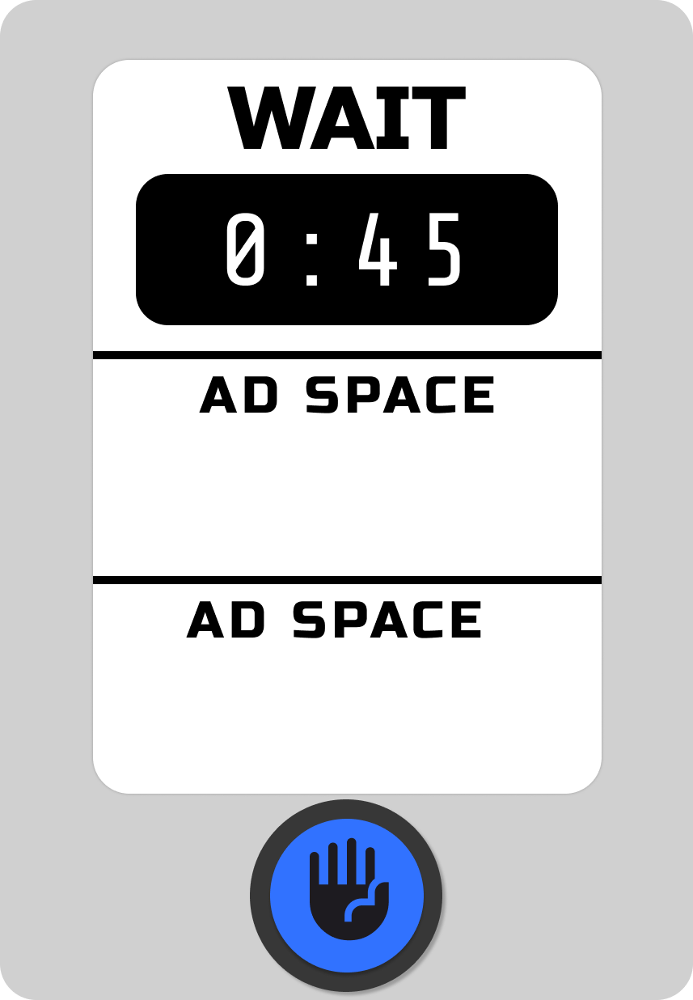

Smart Crosswalk Light Redesign
Redesign for crosswalk signals featuring a digital screen with wait timer, advertising display, and integrated speakers for accessibility
The Problem
We've all been there - standing at a crosswalk, checking our watch, wondering if we should just make a run for it. That uncertainty creates anxiety and sometimes leads to risky decisions.

The Solution

Project Overview
This project addresses common frustrations with traditional crosswalk signals by introducing a smart design that enhances user experience while generating revenue for cities. The redesign incorporates a digital countdown timer, advertising display, and audio features to improve accessibility for all pedestrians.
Traditional crosswalk signals create user frustration due to unknown wait times, while requiring ongoing maintenance costs with no revenue generation for cities.
The Solution
My design adds a digital countdown timer so you know exactly how long you'll wait. Plus, the advertising display helps cities actually make money from their crosswalks instead of just spending on maintenance. And with built-in speakers, it's accessible for everyone.
Design Features & Benefits
Core Features
- Countdown timer that shows exactly when you can cross
- High-contrast display that works in bright sun or at night
- Ad space that actually pays for the crosswalk over time
- Audio announcements for people who are visually impaired
- Weather-proof design that won't break in storms
Key Benefits
No More Wait Anxiety
When you know exactly how long you'll wait, you can relax instead of getting impatient
Pays for Itself
The ad revenue means taxpayers don't have to keep paying for crosswalk maintenance
Works for Everyone
Audio announcements mean people with visual impairments get the same crossing information
Actually Saves Money
Instead of costing the city money, these crosswalks could break even or even turn a profit
Design Process
Initial Wireframes
Early wireframes exploring the integration of countdown timers, advertising space, and accessibility features.
1. User Pain Point Analysis
Identified key frustrations with traditional crosswalk signals and city budget constraints.
2. Revenue Model Research
Analyzed advertising revenue potential and successful smart city implementations worldwide.
3. Technical Feasibility
Researched digital display technology, weather resistance, and integration with existing traffic systems.
4. Accessibility Integration
Ensured audio features and high-contrast displays meet accessibility standards for all users.
Technical Features
Digital Countdown Display
Large, high-contrast countdown timer shows exact seconds remaining for pedestrian crossing.
Integrated Advertising Display
Dedicated advertising space generates revenue to offset infrastructure costs and maintenance.
Weather-Resistant Technology
Durable digital displays designed to function in all weather conditions with anti-glare coating.
Audio Accessibility Features
Integrated speakers provide voice announcements and crossing guidance for visually impaired users.
Impact & Benefits
User Experience Improvements
- Eliminated wait time uncertainty and pedestrian impatience
- Reduced crossing anxiety through clear countdown displays
- Enhanced accessibility for visually impaired pedestrians
- Improved safety through better timing awareness
City Benefits
- Revenue generation through advertising partnerships
- Reduced long-term infrastructure costs
- Potential for complete cost-neutral operation
- Enhanced smart city infrastructure
Design Learning
This project taught me that the best solutions solve multiple problems at once. Instead of just making crosswalks less annoying, I found a way to make them actually profitable for cities. Sometimes the most innovative ideas come from asking "what if this thing that costs money could make money instead?"